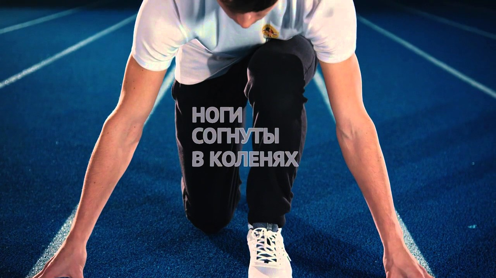

Спринтерский бег: виды, польза, техника, правила, упражнения
База знаний Сервисы ВХОД ВХОД
Техника и фазы спринтерского бега
Лёгкая атлетика — самый массовый вид олимпийского спорта, который включает множество дисциплин.
Одна из них — это спринтерский бег, который требует от спортсмена максимум усилий, но длится всего лишь секунды. В статье расскажем, что это за бег и каковы его особенности.
Что такое спринтерский бег и какие дистанции к нему относятся Польза Техника спринтерского бега Стартовый разгон Бег по дистанции Финиш Правила Техника безопасности Как улучшить: упражнения для спринтерского бегаЧто такое спринтерский бег и какие дистанции к нему относятся
Спринтерский бег, или бег на короткие дистанции — это самый быстрый и зрелищный вид беговых соревнований. Спортсмен бежит с наибольшей скоростью, но при этом преодолевает совсем небольшие по расстоянию отрезки. Таких бегунов называют спринтерами. Знаете ли вы? Самый быстрый человек нашей планеты — выходец из Ямайки по имени Усэйн Болт. И хоть звание это неофициальное, но дистанцию в 100 метров он пробежал всего лишь за 9,58 секунд. Его зафиксированная максимальная скорость — 37,578 км/ч.
Дистанции, на которых проходят различные соревнования, могут быть следующими: 60, 100, 200, 400 метров. Из-за своих особенностей такой вид бега не терпит ошибок.
Если спринтер допустил технические ошибки, когда стартовал или финишировал, неправильно ставил стопу в процессе забега, то он вроде и потеряет всего лишь доли секунды, но именно эти мгновения решают всё. С точки зрения человеческой физиологии, данная техника бега характеризуется бескислородным (анаэробным) дыханием. Спринтер совсем редко успевает дышать, а энергию черпает из своих накопленных ранее запасов.
Нужно также отметить, что основная техника спринта заключается в высоком поднимании бедра, в жёсткой постановке стопы и мощном отталкивании от дорожки, то есть подобный бег имеет силовую направленность. Важно! Если вы вдруг решили заняться спринтерским бегом, но у вас нет хорошей спортивной подготовки, то для начала займитесь именно её улучшением. Иначе могут случиться неприятности с мышцами, связками, а также под угрозой будет ваше сердце, сосуды и дыхательная система.
Польза
Спринтерский бег — это не только отдельная соревновательная дисциплина, его с успехом включают в свои ежедневные тренировки спортсмены разных направлений. Это происходит за счёт того, что данная техника оказывает мощное влияние на весь организм в целом. Польза забега на короткие дистанции значительная и подтверждена не только учёными, но и самими спортсменами и их тренерами: повышаются выносливость, ловкость; улучшается координация движений; лёгкие начинают работать более эффективно, а это значит, что органы и ткани начинают получать больше кислорода; улучшается обмен веществ; повышается тонус мышц всего тела; интенсивно сжигаются жиры, что приводит к похудению; тренируется вся сердечно-сосудистая система, что помогает быстрее адаптироваться к большим физическим нагрузкам.
Техника спринтерского бега
Прежде чем заняться спринтерским бегом, нужно в деталях изучить её технику и неукоснительно соблюдать, чтобы получить максимально возможные результаты. Ознакомьтесь с правилами и техниками бега через барьеры , челночного бега , бега на короткие дистанции и бега на длинные дистанции .
Старт
Любой забег на короткие дистанции начинается с низкого старта. Для этого необходимы специальные беговые колодки. Надо отметить, что на соревнованиях высокого уровня в таких колодках помещают специальный датчик, который реагирует на давление от стопы. Это позволяет автоматически выявить и зафиксировать фальстарт. Кроме этого, нельзя выполнять никаких лишних движений, только те, которые предусмотрены техникой.
Во время старта выполняются три команды: «На старт!». Спринтер опускается на одно колено, его руки ставятся возле специальной линии, голова опущена. «Внимание!». Спортсмен поднимает свой таз таким образом, чтобы нога, которая находится дальше от линии, выпрямилась, далее поднимает колено второй ноги и вес тела переносит на плечи. «Марш!» . При этой команде руки бегуна отрываются от дорожки, следом отрывается дальняя нога. После этого производится мощный мах обеими руками и отталкивание дальней ногой, при этом ближняя нога полностью и довольно резко распрямляется.
Важно! На соревнованиях для каждого бегуна отведена отдельная дорожка, по которой он должен бежать всю дистанцию, не наступая на разделительную полосу. При старте бегун-спринтер никогда не должен резко выпрямляться по вертикали, а должен сохранять уклон тела (45–52 градуса) и держать голову затылком вперёд.
Стартовый разгон
Разгон сразу после старта очень важен для получения хорошего результата. Важно! Поскольку движение при старте начинается с движения туловища, то для получения хороших результатов важна сила спинных мышц. Он выполняется следующим образом: спринтер производит мощное отталкивание от покрытия, причём его бедро должно подняться под углом 90 градусов к туловищу; туловище находится в значительном наклоне; длина первого шага лежит в пределах 1–1,30 м, что считается небольшой величиной; первый шаг делается той ногой, которая у спортсмена более сильная, потому что она испытывает максимальную нагрузку; происходит постепенное увеличение скорости, причём первые три шага очень важна сила отталкивания от земли, а затем скорость движения бёдер; выпрямление туловища происходит на 4–7 метре от начала забега, причём чем опытнее бегун, тем длиннее разгон сразу после старта.
Бег по дистанции
Что касается непосредственно бега по дистанции, то рекомендации по технике выполнения такие: повышение скорости сопровождается постепенным увеличением длины шагов — 1,9–2,4 метра; к отметке 30 метров скорость составляет до 95% от максимально возможной; бежать нужно плавно, без рывков; стопа спортсмена на пятку не опирается, движение происходит с носка одной ноги на носок другой; отталкивание происходит за счёт стопы, причём резко и мощно; руки должны быть скоординированы с ногами, а также согнутыми в локте под углом 90 градусов; кисти рук держатся полусжатыми или свободно разогнутыми и двигаются вперёд и вверх до линии подбородка. Важно! Стоит от метить, что у некоторых спортсменов сила ног неодинаковая, что приводит к неравномерной длине шагов, поэтому необходимо больше тренировать слабую ногу, чтобы сила обеих конечностей совпадала и шаги были одинаковыми.
Финиш
Спринтер считается финишировавшим тогда, когда он в стремительном порыве сбивает финишную ленту своими плечами. На крупных соревнованиях ленты давно не используют, а непосредственный момент финиша регистрируют по плечам спортсмена. Обычно при пересечении линии финиша бегун делает резкое движение своими плечами вперёд. Интересно, что иногда это помогает вырвать доли секунды у соперника.
Правила
Обычно в соревнованиях по этой беговой дисциплине участников очень много, поэтому принято делать отбор. Первым делом происходит общий забег, а затем, в зависимости от количества бегунов, проводят несколько кругов, пока не доберутся до финала.
При старте, как мы уже писали, спортсмены принимают низкое положение и используют колодки. На соревнованиях высокого уровня обязательно должна быть автоматическая система для учёта времени и фиксации момента финиша. Рекомендуем узнать больше о пользе бега по утрам .
При прохождении дистанции на открытых стадионах учитываются скорость и направление ветра. Ведь если ветер попутный, то спортсмену он очень помогает. В связи с этим принято, что если скорость ветра больше 2 метров в секунду, то полученный результат не засчитывается, как официальный или личный рекорд. Отдельно объясним термин «фальстарт». Звучит выстрел бегового пистолета и все должны начать движение. В этот момент очень важна реакция бегуна: принято, что если он стартовал раньше установленного времени, а это всего 0,1 секунды, то засчитывается фальстарт.
В настоящее время, чтобы убрать субъективность решения судей, на официальных забегах применяется автоматическая система. С помощью специальных датчиков фиксируют старт раньше времени. В этом случае спринтер снимается с соревнований.
Теперь поговорим о финишировании. Начиная с 1972 года, принято использование системы автоматического фотофиниша и электронного хронометража. Используя данные, которые получены автоматически, судьи без проблем могут определить победителя вплоть до сотых долей секунды. Знаете ли вы? С низкого старта подобный вид бега начинался не всегда, а только с 1882 года. Случилось это благодаря наблюдательному спринтеру Шериллу. Он наблюдал за кенгуру и заметил, что когда они начинают движения, то прижимаются к земле. Над спортсменом сначала смеялись, но насмешки прекратились после того, как он без труда выиграл забег, стартовав новым способом.
Техника безопасности
Спортсмен, который бежит спринт, испытывает колоссальные нагрузки. Вот почему в этой беговой дисциплине категорически нельзя пренебрегать техникой безопасности. В противном случае будут травмы, которые могут надолго выбить бегуна из спортивной жизни. Правила следующие: Обязательная разминка. Рекомендуется бег трусцой (10 минут), приседания, наклоны туловища, в результате чего мышцы разогреваются и всё тело настраивается на бег с предельно возможной скоростью. Заминка. Позволит организму бегуна плавно прийти в спокойное состояние. Для этого рекомендуется сразу после прохождения дистанции перейти на бег трусцой, затем на ходьбу и так двигаться до тех пор, пока пульс не будет в норме, а дыхание ровным. Одежда и обувь. В этой беговой дисциплине особое внимание необходимо уделять обуви. Кроссовки должны быть с амортизирующей подошвой, удобной шнуровкой, подходящего размера и хорошо фиксировать пятку. Кроме этого, необходимо следить за состоянием спортивной обуви, чтобы в самый неподходящий момент что-нибудь не порвалось или не отвалилось. Что касается одежды, то она должна быть такой, чтобы движения спортсмена были свободными. Узнайте как сделать разминку перед бегом , как правильно и быстро бегать , как увеличить и развить выносливость в беге .
Как улучшить: упражнения для спринтерского бега
Как мы уже говорили раньше, для достижения победных результатов в спринте нужны сильные мышцы. Особенно важны те, которые участвуют непосредственно в процессе бега и помогают избежать травм. Именно поэтому все профессиональные бегуны тренируют мускулатуру путём выполнения специализированных упражнений в тренажёрном зале, рекомендованная частота — трижды в течение недели. Важно! Очень полезно во время тренировки периодически встряхивать руками и выдерживать правильную осанку. Разберём упражнения для тех мышц, которые очень важны для бегунов: Делаем выпады, меняя ноги в прыжке. Рекомендуется выполнять до 12 повторов, 2–3 подхода. Очень хорошо прорабатываются ягодичные мышцы и мышцы бедра. Прыгаем сначала на одной ноге, выполняя по очереди движения вперёд, назад, в стороны. Нога должна быть немного согнута в коленном суставе. Делаем 15–20 раз каждой ногой, до 3 подходов. Это упражнение позволит укрепить мышцы на лодыжке. Теперь укрепим заднюю поверхность бедра. Для этого необходимо встать на колени на коврике, а под голени положить валик (обычно его делают из полотенца). Теперь необходимо делать наклон вперёд и, оттолкнувшись от пола руками, вернуться в начальную позицию. Количество повторов — до усталости в мышцах, 3 подхода. Делаем разнообразные планки — боковые и фронтальные, можно с опорой на одну из рук. Это поможет вам укрепить мышцы кора (мышцы, которые находятся посередине нашего тела). Делаем расслабляющие упражнения для стоп, для чего понадобится теннисный мячик, который следует положить на пол. Освободите стопу от обуви и хорошо помассируйте её, просто надавливая на мячик.
Такие упражнения с успехом могут использовать не только профессионалы, но и любители для улучшения своей физической силы.
В заключение хочется сказать, что спринт под силу даже не каждому спортсмену. Некоторые легкоатлеты делают спринтерский забег своим коньком, другие используют его в качестве тренировки.
В любом случае, эта замечательная беговая дисциплина помогает людям преодолеть себя и открыть для своего организма новые возможности.
Бег Виды спорта Спорт и фитнес Легкая атлетика
Новости по теме
Какие мышцы работают во время бега Что дает бег с гантелями в руках Бег на средние дистанции: техника и правила тренировок
Читать далее
2018-09-16
Езда на велосипеде: польза и вред, обучение и правила езды
2018-09-13
Как принимать «Пентоксифиллин» в бодибилдинге?
2018-09-12
Эффективные упражнения для лечения сколиоза 1-й степени
2018-09-12
Лечебная гимнастика доктора Попова
2018-08-29
«Диабетон» в бодибилдинге: инструкция по применению, курс приёма
2018-08-28
Упражнения для укрепления мышц спины при остеохондрозе
Комментарии Последние комментарии Печень щуки: польза и вред, рецепт приготовления Иван Фёдоров
Много раз готовил печень щуки. Всегда очень просто - обвалка в муке с солью и жарка на сковороде, на ...
Продукты, содержащие клетчатку Docent StasikДа народные средства хороши как профилактика, когда уже реальная проблема надо применять артиллерию ...
Продукты, содержащие клетчатку Бехруз БотировОчистка - это, конечно, хорошо, но порядок в природе - это беспорядок. Поэтому, пожалуй, оставлю порядок ...
Витамин B1, B2 и B6 Ольга ЕвлегинаСейчас очень много хороших витаминов группы в. Единственный момент,что это именно водорастворимые витамины,соответственно ...
Минеральная вода Нафтуся Ольга ЕвлегинаПолностью согласна! Вода может здорово помочь организму,если выбрать нужную воду. Я так несколько лет ...
© 2020 Lifegid.com Конфиденциальность Использование любых материалов, размещенных на сайте, разрешается при условии ссылки на lifegid.comРедакция портала может не разделять мнение автора и не несет ответственности за авторские материалы, за достоверность и содержание рекламы
